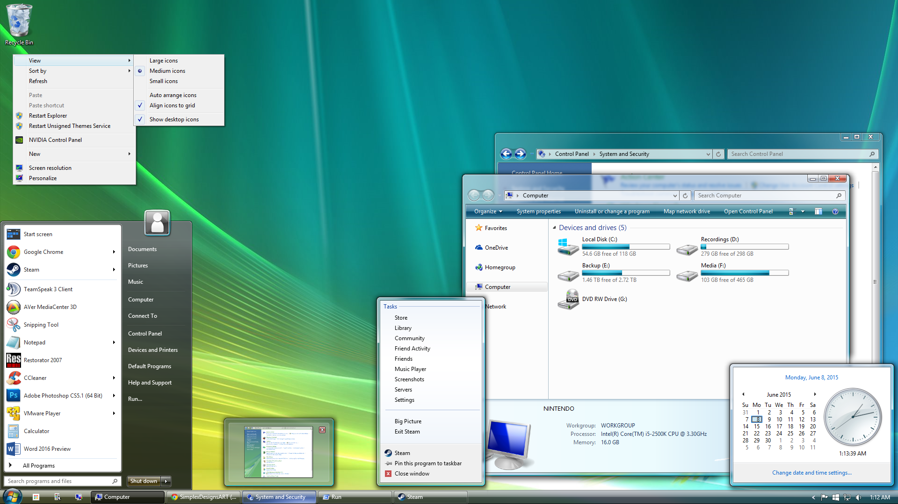
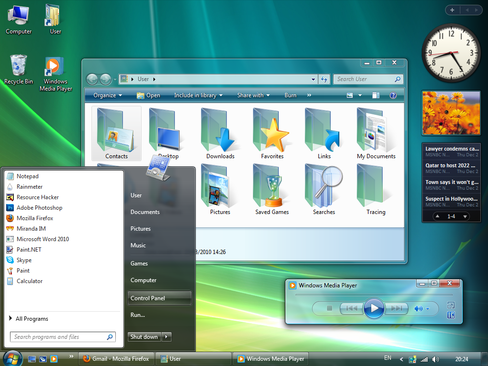

Windows Vista — операционная система семейства Windows NT корпорации Microsoft. Была выпущена 30 января 2007 года. На стадии разработки имела кодовое имя «Longhorn». Построена на основе гибридного ядра NT версии 6.0. В качестве сокращенного имени иногда используется акроним «WinVI», объединяющий три первые буквы названия и версию ядра в римской записи. Предназначена исключительно для рабочих станций и персональных компьютеров; её ориентированная на серверы «сестра» — Windows Server 2008. Предшественником была Windows XP, а следующей ОС в линейке — Windows 7. 30 ноября 2006 года Microsoft официально выпустила Windows Vista и Office 2007 для корпоративных клиентов. 30 января 2007 года начались продажи системы в СНГ для обычных пользователей. Vista получила обновлённый дизайн пользовательского интерфейса по сравнению с Windows XP, но такой популярности, как своя предшественница, не приобрела.
На раннем этапе разработки система была известна под кодовым именем Longhorn (по имени бара Longhorn Saloon вблизи лыжного курорта Whistler в Британской Колумбии). Название Vista было объявлено 22 июля 2005 года. Спустя несколько месяцев Microsoft также переименовала Windows Longhorn Server в Windows Server 2008. С 8 ноября 2006 года полноценная версия Windows Vista доступна для производителей оборудования. Релиз выпуска для конечных пользователей состоялся 30 января 2007 года[5]. Стоит заметить, что выпуск многих функций, анонсированных в Windows Vista, был отменен Microsoft из-за недовольства общественности. Например, предполагалось, что OpenGL будет реализован как надстройка над Direct3D. Это привело бы к серьёзному падению производительности OpenGL по сравнению с Direct3D и к фиксации версии OpenGL. Опасения не оправдались, поддержка OpenGL в Windows Vista осталась. Не вошла в Windows Vista и файловая система WinFS — на сей раз из-за проблем с производительностью.
В Windows Vista обновлена подсистема управления памятью и вводом-выводом. Новой функциональностью также является «Гибридный спящий режим», при использовании которого содержимое оперативной памяти дополнительно записывается на HDD, но и из памяти также не удаляется. В результате, если питание не выключалось, компьютер восстанавливает работу, пользуясь информацией из ОЗУ.  Если же подача энергии прекратилась, операционная система использует сохранённую на HDD копию ОЗУ и загружает информацию из неё (аналог спящего режима). Режим реализован благодаря так называемым «файлам гибернации», которые занимают объём на жёстком диске, равный объёму установленной на компьютере оперативной памяти. Пользователь может удалить эти файлы (утратив функцию гибернации), при этом восстановление данных файлов возможно путём вызова специальных команд из командной строки. С 28 июля 2005 года разработчикам и IT-профессионалам была разослана первая бета-версия. В ней были представлены основы новой архитектуры системы и все разработанные на тот день технические возможности. Первая бета-версия была выпущена для того, чтобы у аудитории сложилось первое впечатление о новой ОС, а также для обнаружения ошибок в новой системе до её официального выпуска. По результатам первого этапа бета-тестирования были доработаны пользовательские функции системы, которые затем были представлены во второй бета-версии. Финальная версия Windows Vista представлена в вариантах для 32- и 64-разрядных процессоров. Windows Vista имеет также новый логотип. По мнению дизайнеров компании, этот логотип иллюстрирует изменения в пользовательском интерфейсе новой операционной системы.
Архитектура Windows NT имеет модульную структуру и состоит из двух основных уровней — компоненты, работающие в режиме пользователя, и компоненты режима ядра. Программы и подсистемы, работающие в режиме пользователя, имеют ограничения на доступ к системным ресурсам. Режим ядра имеет неограниченный доступ к системной памяти и внешним устройствам. Ядро системы NT называют гибридным ядром или макроядром. Архитектура включает в себя само ядро, уровень аппаратных абстракций (HAL), драйверы и ряд служб (Executives), которые работают в режиме ядра (Kernel-mode drivers) или в пользовательском режиме (User-mode drivers). Пользовательский режим Windows NT состоит из подсистем, передающих запросы ввода-вывода соответствующему драйверу режима ядра посредством менеджера ввода-вывода. Есть две подсистемы на уровне пользователя: подсистема окружения (запускает приложения, написанные для разных операционных систем) и интегрированная подсистема (управляет особыми системными функциями от имени подсистемы окружения). Режим ядра имеет полный доступ к аппаратной части и системным ресурсам компьютера.